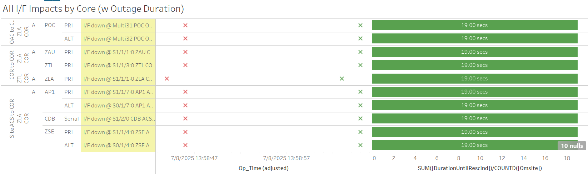

Weekly Highlights 20250702-20250709
7/2 - YYR WRE-C High RAM Utilization
- 7/2 20:51 - YYR WRE-C to Maintenance and Reset to address high RAM Utilization -- ref LIR 1009406624; restored to Normal at 7/2 21:12
7/4 - YYR WRE-B Freq Std Failure
- 7/4 02:58 - YYR WRE-B Faulted with SEs 29,52,53,59 indicating Freq Std; Control Powered and restored to Normal at 7/4 04:25
- 7/4 15:17 - YYR WRE-B Faulted with SEs 29,52,53,59 indicating Freq Std; Control Powered and restored to Normal at 7/4 16:07
- 7/4 16:26 - YYR WRE-B Faulted with SEs 29,52,53,59 indicating Freq Std; requested Freq Std replacement -- ref LIR 1010395424; Shutdown Subsystem at 7/4 20:27...
7/4-7/9 - CM1 GUS RFU M&C Comm Fault
- 7/4 13:47 - CM1 GUS received SE 1 RFU M&C Comm Fault; SE cleared at 7/4 13:52 coincident with SE 205 RFU FDA Failure event occurring and rescinding within 1 second
- 7/9 16:08 - CM1 GUS to Maintenance Mode to replace M&C Server -- ref LIR 1012921724 ...
7/5-7/9 - L1/L2 Bias Alarms
- 7/5 16:05 - YYR L1/L2 Bias Error
- 7/7 17:42 - MMD, MPR, and MTP L1/L2 Bias Error
- 7/8 13:59 - MSD L1/L2 Bias Error
7/7 - YYR WRE-A Power Outage
- 7/7 04:16 - YYR WRE-A to No Data Reported -- coincident with Ring 1 comms down hard; likely power outage to WRE-A; returned to Maintenance at 7/7 04:55 and restored to Normal at 7/7 11:58
7/8 - BIL WRS Outage
- 7/8 15:02 - BIL WRS OFFLINE for Power Outage -- ref LAD 1113177732; all WREs returned to service in Normal Mode at 7/8 17:15
7/8 - ZMA WRE-C RF Site Survey Activities
- 7/8 15:15 - ZMA WRE-C to Maintenance for RF Site Survey activities -- ref LIR 1008438924...
7/8 - S15 Uncommanded Switchover
- 7/8 15:59 - BR1 / BR2 GUSes both received SE 500s and SE 511 CV Source Switch to Unknown
- 7/8 16:00 - GUS Switchover - S15 - Uncommanded Switchover - CM1 to Primary / BR1 to Backup due to Brewster comm event
- 7/9 07:00 - GUS Switchover - S15 - BR1 to Primary / CM1 to Backup in advance of planned maintenance
- 7/9 09:48 - S15 GEO Selected Source CV change from ZTL->ZLA to restore split selected sources
7/8 - MTP WRE Bias Err
- 7/8 23:14 - MTP WRE-A/C alarmed with SE 729 WRE Bias Err for all C&Vs
- 7/9 00:30 - MTP WRE-A and WRE-C to Maintenance and Restarted to address WRE Bias Err alarms; restored to Normal at 00:55
Various Comm Impacts
* Only captures major / long-term comm outages
CM1 Comms
- 7/2 17:25 - CM1 Ring 2 PRI comms flapping; last event cleared at 7/2 22:10 (~403 seconds total)
- 7/3 14:01 - CM1 Ring 2 PRI comms flapping; last event cleared at 7/3 19:13 (~6351 seconds total)
- 7/3 18:09 - CM1 Ring 1 PRI comms flapping; last event cleared at 7/3 20:47 (~139 seconds total)
- 7/7 16:06 - CM1 Ring 2 PRI comms flapping; last event cleared at 7/7 21:25 (~466 seconds total)
- 7/7 22:20 - CM1 Ring 1 PRI / Ring 2 ALT comms down hard and looped back; both lines cleared at 7/7 22:24 (~256 seconds)
- 7/8 16:40 - CM1 Ring 2 PRI comms flapping; last event cleared at 7/8 23:39 (~1345 seconds total)
- 7/9 16:46 - CM1 Ring 2 PRI comms flapping...
OTZ Comms
- 7/2 13:37 - OTZ Ring 2 PRI comms flapping; last event cleared at 7/2 20:58 (~13644 seconds total)
- 7/4 17:11 - OTZ Ring 2 PRI comms flapping; last event cleared at 7/4 20:10 (~4767 seconds total)
- 7/8 19:30 - All OTZ comms down hard; all lines except OTZ Ring 1 ALT restored by 19:33 (~140 seconds)
HNL Comms
- 7/2 17:34 - HNL Ring 1 ALT / Ring 2 PRI comms down hard; both lines cleared after loopback events at 7/2 17:50 (~927 seconds)
- 7/6 13:02 - HNL Ring 1 ALT / Ring 2 PRI comms down hard; both lines cleared at 7/6 13:04 (~100 seconds)
YYR Comms
- 7/3 14:31 - YYR Ring 1 comms flapping; last event cleared at 7/3 16:20 (~280 seconds total)
- 7/5 13:39 - YYR Ring 1 comms flapping; last event cleared at 7/5 17:05 (~3568 seconds total)
- 7/6 14:07 - YYR Ring 1 comms flapping; last event cleared at 7/6 14:17 (~471 seconds total)
- 7/6 14:58 - YYR Ring 1 comms flapping; last event cleared at 7/6 15:18 (~300 seconds total)
- 7/7 15:12 - YYR Ring 1 comms flapping; last event cleared at 7/7 16:51 (~1784 seconds total)
- 7/9 19:58 - YYR Ring 1 comms down hard; line cleared at 7/8 20:11 (~740 seconds)
Other Sites
- 7/7 17:29 - MSD Ring 1 comms down hard; line cleared at 7/7 20:49 (~3h 19m)
- 7/7 20:59 - MSD Ring 1 comms down hard; line cleared at 7/8 01:09 (~4h 9m)
- 7/8 13:58 - ~20 second comm hit centered at ZLA COR-A impacted several sites

- 7/8 16:07 - AP1 Ring 1 ALT / Ring 2 PRI comms flapping; last events cleared at 7/8 16:13 (~110 seconds total)
- 7/9 19:59 - YFB Ring 1 comms down hard; line cleared at 7/8 20:03 (~220 seconds)
- 7/9 03:59 - ZMA Ring 2 ALT comms down hard; line cleared at 7/9 04:11 (~745 seconds)
- 7/9 04:21 - All MX Ring 1 Eth comms down hard; all lines cleared at 7/9 04:23 (~105 seconds)
- 7/9 05:34 - All MX Ring 1 Eth comms down hard; all lines cleared at 7/9 05:36 (~100 seconds)
Brewster Comms Down Hard...
- 6/25 09:09 - BR1 Ring 1 ALT / Ring 2 PRI + BR2 Ring 1 ALT / Ring 2 PRI comms down hard...
Mexico Ring 2 Down Hard...
- Targeting network upgrade in CY26
YFB Ring 2 Down Hard...
YFB requires satcom upgrades by NavCanada to restore... ref LIR 892056924
- 11/6/24 18:48 - YFB Ring 2 down hard... both rings to YFB down hard...
List of current offline WREs
List of current offline WREs -- ref WAAS Status Monitor
All Depot shipments to Mexico are halted until the customs process can be finalized
- 6/9 - MMX WRE-C processor configured and shipped to Brownsville
- 6/18 - Free Entry Permit Approved
- ~2-3 week holding period in Brownsville...
- ZMA WRE-C - 7/8/25-... - RF Site Survey -- ref LIR 1008438924
- YYR WRE-B - 7/4/25-... - Freq Std failed -- ref LIR 1010395424
- MMD WRE-A - 3/31/25-... - Freq Std failed -- ref LIR 953873324
- MTP WRE-B - 11/18/24-... - Receiver inits failing -- ref LIR 898330924
- MMX WRE-A - 10/13/24-... - Freq Std failed -- ref LAD 879853824
- MMX WRE-C - 5/15/24-... - Processor failed and could not be restored -- ref LIR 798352224
- MPR WRE-B - 5/3/24-... - Inits failing -- looks like a bad freq std; due to shipping issues, there is no spare Freq Std and no ETA to recover WRE-B... -- ref LIR 44170821
5/11/23-... - MX Ring 2 Satcom Upgrade
- 5/11/23 17:01 - MX Ring 2 SatCom upgrade begins; MX Ring 2 OFFLINE until upgrade troubleshooting is complete
All sites are currently connected through Tijuana with new cables; but still large UDP data packets (WAAS Multicast) being dropped on Ring 2 -- no further actions to take at Tijuana
- All MX Ring 2 currently down with no ETA...
-
WAAS Second Level assessing situation before further troubleshooting...

Major Events


Core I/F Status

Comm Events

Mexico Comm Status